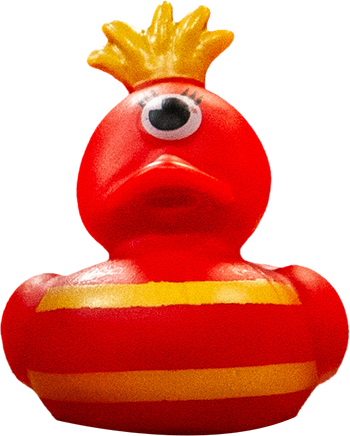

Mcduck
Wie is deze eend?
Ontmoet Mcduck, de rode eend met één oog en een passie voor McDonald's! Altijd op zoek naar het perfecte 'McMoment', deelt Mcduck zijn enthousiasme voor frietjes en hamburgers met vrienden. Zijn levensmotto? "Make Every Moment a McMoment!" Mcduck nodigt iedereen uit voor spontane McDonald's-uitjes en gelooft in de balans tussen lekker eten en actief blijven.
Met zijn wijd open oog en kwakend van opwinding is hij een vrolijke verschijning. Een eend die liever snackt dan kwakt, want "Waarom quacken als je kunt snacken?" Onvergetelijk en energiek, Mcduck maakt elke dag smaakvol met zijn liefde voor fastfood.
Top 3 personen waarop ik zou poepen

Lewis hamilton
Gerard Joling
gordon